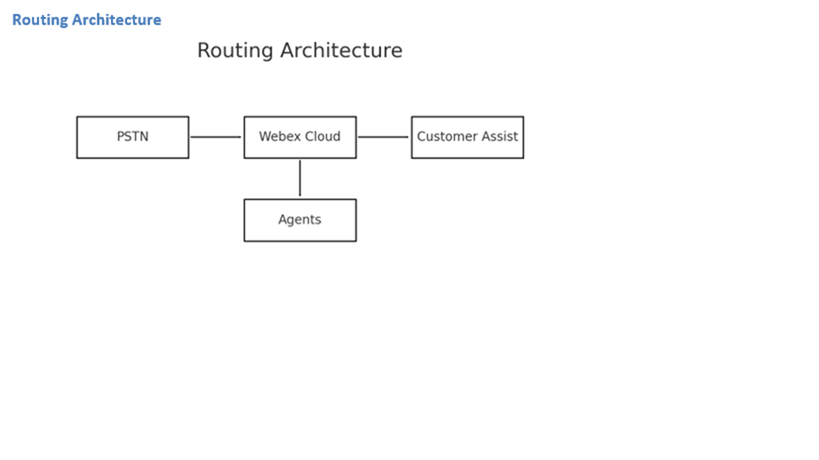

Webex Customer Assist — Modern Customer Engagement Architecture for the Enterprise
A Leadership & Technical Perspective
Enterprises today are under immense pressure to deliver responsive, consistent, and measurable customer service—yet many do not have the budget, operational readiness, or workload scale to justify a full Contact Center as a Service (CCaaS) deployment. Webex Calling Customer Assist directly responds to this gap ...
1. Strategic Leadership Overview
Webex Customer Assist offers a modern, cloud-native, scalable approach ...
Key Strategic Advantages
- Modern CX maturity — Queueing, routing, monitoring...
- Frictionless adoption — Agents use Webex App...
- Unified platform — Calling + collaboration + AI...
- Scalable & distributed...
- Future-ready AI foundation...
2. High-Level Architecture Overview
Customer Assist operates as a cloud-native service layer...

Core Components
- Webex Calling Cloud
- Customer Assist Layer
- Control Hub
- Webex AI
3. Queue Architecture & Routing Logic
...4. Recording, Storage & Compliance
...5. Supervisor Workflows
...6. Analytics & AI Capabilities
...7. Deployment Architecture
...8. Enterprise Fit & Use Cases
...9. Leadership Summary
Webex Customer Assist ...